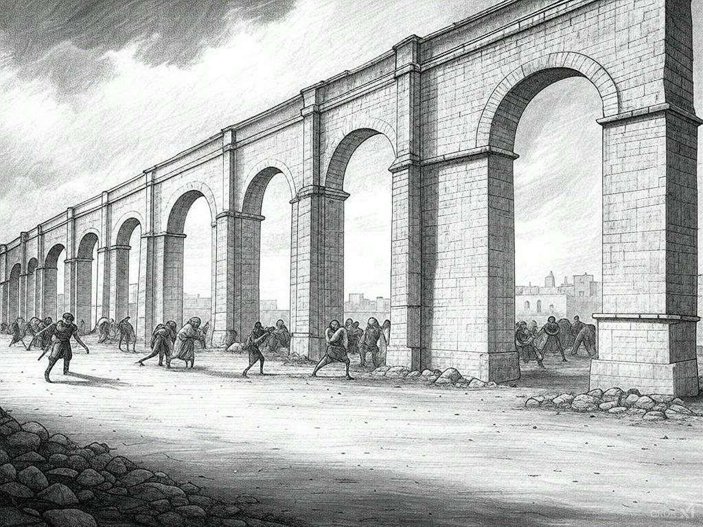

Middle Ages Timeline (500–1500 CE)
- 476 CE - Fall of the Western Roman Empire
- 622 CE - Muhammad’s Hijra
- 732 CE - Battle of Tours
- 800 CE - Charlemagne Crowned Emperor
- 1054 CE - Great Schism
- 1066 CE - Battle of Hastings
- 1095 CE - First Crusade Begins
- 1215 CE - Magna Carta Signed
- 1265 CE - Birth of Dante Alighieri
- 1347 CE - Black Death Arrives in Europe
- 1381 CE - Peasants’ Revolt in England
- 1415 CE - Battle of Agincourt
- 1431 CE - Joan of Arc Burned at the Stake
- 1453 CE - Fall of Constantinople
- 1455 CE - Gutenberg Prints the Bible
476 CE - Fall of the Western Roman Empire
The deposition of Romulus Augustulus by Odoacer ends Roman rule in the West, marking the start of the Middle Ages.
622 CE - Muhammad’s Hijra

Muhammad’s migration from Mecca to Medina establishes the Islamic calendar and the rise of a new faith.
732 CE - Battle of Tours

Charles Martel halts Muslim expansion into Western Europe, solidifying Frankish power.
800 CE - Charlemagne Crowned Emperor

Pope Leo III crowns Charlemagne, reviving the concept of a Christian empire in the West.
1054 CE - Great Schism

The split between the Roman Catholic and Eastern Orthodox churches divides Christianity.
1066 CE - Battle of Hastings

William the Conqueror’s victory reshapes England with Norman rule.
1095 CE - First Crusade Begins

Pope Urban II launches a holy war to reclaim Jerusalem, igniting centuries of conflict.
1215 CE - Magna Carta Signed

King John signs a charter limiting royal power, a cornerstone of modern governance.
1265 CE - Birth of Dante Alighieri

The birth of the poet who would later write *The Divine Comedy*, shaping medieval literature.
1347 CE - Black Death Arrives in Europe

The plague kills millions, transforming European society and economy.
1381 CE - Peasants’ Revolt in England

Peasants rebel against taxes and serfdom, rattling feudal structures.
1415 CE - Battle of Agincourt

English longbowmen under Henry V defeat a larger French army, a key moment in the Hundred Years’ War.
1431 CE - Joan of Arc Burned at the Stake

The French heroine is executed, but her legacy inspires French resistance.
1453 CE - Fall of Constantinople

Ottoman Turks conquer the Byzantine capital, ending the Eastern Roman Empire.
1455 CE - Gutenberg Prints the Bible

Johannes Gutenberg’s printing press revolutionizes knowledge dissemination, signaling the end of the Middle Ages.